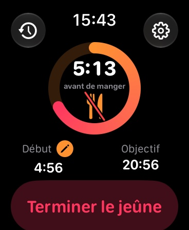
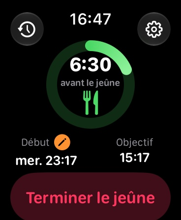
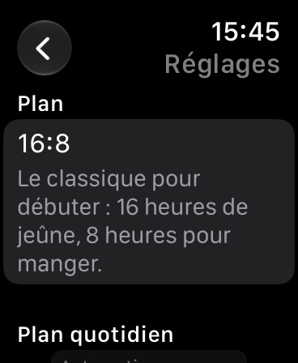
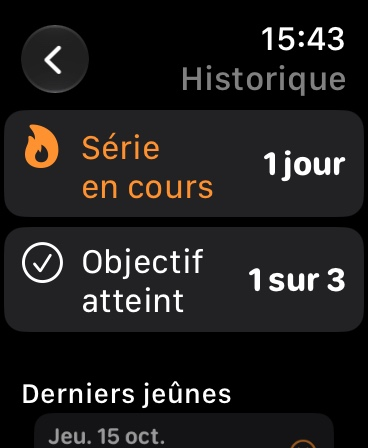

Jeûne intermittent au poignet
Démarre ton jeûne d’un geste, vois le temps restant et la phase sur ton cadran et reçois un rappel discret à l’heure de manger. Sans compte, indépendant de l’iPhone.




FastingTracker est le minuteur de jeûne intermittent simple pour l’Apple Watch. Tout fonctionne directement sur la montre : indépendant de l’iPhone, sans compte, sans publicité.
Choisis un plan, touche « Démarrer le jeûne » et vois d’un coup d’œil le temps restant. Un anneau coloré indique la progression et la phase : jeûne, fenêtre alimentaire ou prêt.
Anneau, temps restant et phase directement sur le cadran : circulaire, coin, rectangulaire et en ligne de texte. L’anneau avance en direct sans solliciter la montre.
Sur demande, un rappel une heure avant la fin du jeûne et à sa fin, pour ne pas rater le moment de manger.
Tes 30 derniers jeûnes, ta série en cours et le nombre de fois où tu as atteint ton objectif.
Démarré trop tard ? Recule l’heure de début jusqu’au vrai début.
Achat unique, sans abonnement, sans achats intégrés, sans publicité. Toutes les données restent sur ta montre. Pas de connexion, pas d’analyse, pas de suivi.
Remarque : FastingTracker n’est pas un dispositif médical et ne remplace pas un avis médical. Le jeûne ne convient pas à tout le monde, par exemple en cas de grossesse, de troubles du comportement alimentaire, de diabète ou d’insuffisance pondérale. En cas de maladie préexistante, parle-en d’abord à ton médecin.